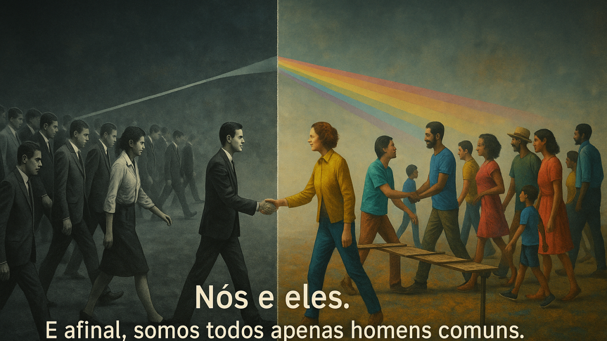

Lula Vs Bolsonaro E Us And Them O Que Ainda Não Entendemos Sobre A Polarização
{width="5.905555555555556in" height="3.3222222222222224in"}
Nós e Eles: Conformidade vs. Colaboração
Lula vs Bolsonaro & Us and Them: O que ainda não entendemos sobre a polarização
 {width="1.0416666666666667in" height="1.0416666666666667in"}
{width="1.0416666666666667in" height="1.0416666666666667in"}
Desenvolvedor Java Sênior | Especialista em Back-end | Jakarta, Spring Boot, REST APIs, Docker | Engenheiro Químico
1 de agosto de 2025
"Us and them / And after all, we're only ordinary men" --- Pink Floyd, 1973
Vivemos tempos extremos. No Brasil, a política virou palco de uma disputa simbólica entre dois polos: Lula vs Bolsonaro. Essa rivalidade está longe de ser apenas ideológica --- ela se tornou emocional, tribal, irracional.
E o mais inquietante? Isso já foi previsto há décadas --- por uma banda de rock progressivo.
Us and Them: A trilha sonora da polarização
A música "Us and Them", do Pink Floyd, lançada em 1973, é um retrato sombrio da divisão humana. Fala da guerra, da política e da alienação. Mostra como o mundo constantemente separa pessoas entre "nós" e "eles".
"With, without --- and who'll deny it's what the fighting's all about?"
A guerra é sempre construída em torno da escassez, da disputa simbólica, da ilusão de que precisamos escolher lados. Mas no fim, são sempre "os de baixo" que pagam a conta.
Lula vs Bolsonaro: O teatro dos extremos
No Brasil, substituímos debates técnicos por rótulos. Em vez de discutirmos políticas públicas, taxonomia fiscal, reformas estruturais ou justiça social, nos perdemos em slogans e hashtags.
Lula virou símbolo de esperança para uns, e de corrupção para outros. Bolsonaro é lido como o salvador da pátria ou como ameaça à democracia.
E enquanto discutimos entre nós, quem governa de verdade --- o capital, os interesses privados, os bastidores de Brasília --- segue operando. Em silêncio.
"Forward he cried from the rear --- and the front rank died."
A jogada que poucos perceberam
A grande jogada nunca foi fazer você entender a política. Foi fazer você escolher um time.
Porque quando você veste a camisa de um lado, você para de questionar. Aceita erros, repete narrativas, ataca o outro. E mais importante: desvia seu olhar de quem realmente toma as decisões.
Enquanto isso, juros continuam altos, salários estagnados, investimentos travados e os serviços públicos em crise.
Precisamos sair do "nós contra eles"
A polarização é um produto vendido todos os dias --- pela mídia, pelas redes sociais, pelos próprios políticos.
Mas como profissionais, cidadãos e pessoas que pensam, temos a obrigação de olhar além do teatro.
O verdadeiro conflito não é entre Lula e Bolsonaro. É entre uma sociedade que quer avançar --- e um sistema que lucra com nossa distração.
Para refletir
Você está defendendo ideias ou idolatrando pessoas?
Quais interesses estão por trás da sua indignação?
Quem ganha com a sua raiva?
Se você acredita que precisamos amadurecer o debate público, sair da trincheira emocional e começar a discutir o que realmente importa --- compartilhe este texto.
Porque ainda somos, como dizia o Pink Floyd, apenas homens comuns. Mas não precisamos ser ingênuos para sempre.
Feliz Aniversário! Meu amigo CHARLES FERREIRA DE OLIVEIRA Dia: 02 de agosto.